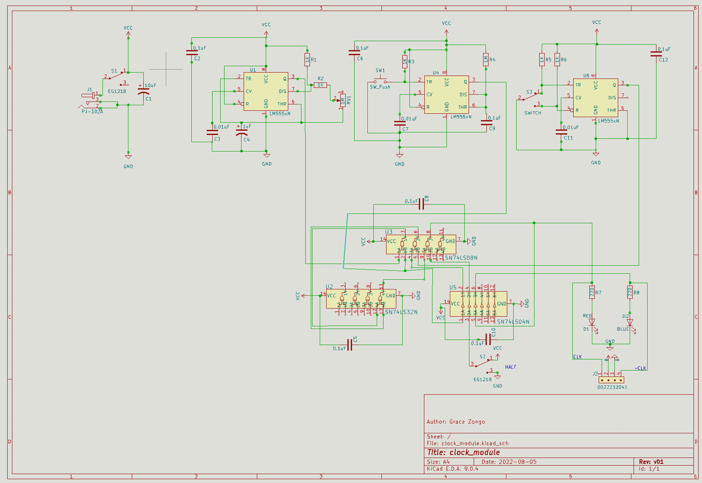
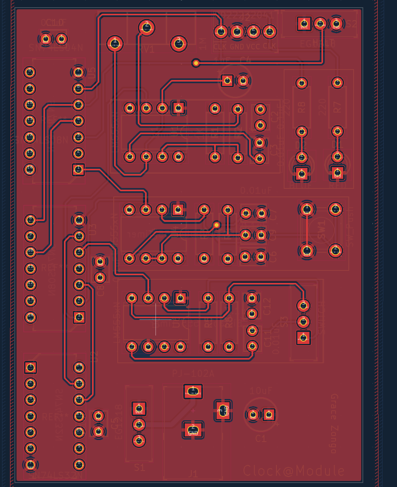

Prototyped and designed a clock generation module using a 555 timer to provide a stable
timing source for digital circuits.
What I Did
Configured the 555 timer in astable mode to generate a periodic clock signal.
Selected resistor and capacitor values to hit a target frequency.
Built and tested the circuit on breadboard and prototype hardware.
Verified output frequency and duty cycle using measurement tools.
System Images
Clock module prototype built around a 555 timer and logic gates for mode switching

Schematic: 555 timer configured in astable mode

Breadboard build for initial validationFrequency and duty-cycle verification using an oscilloscope
Results
Generated a stable, reliable clock signal for digital systems.
Covered a wide range: from manual trigger up to ~10 kHz astable frequency.
Reinforced understanding of analog timing circuits and component-level design.
Demonstration of breadboard prototype (monostable, astable, bistable).